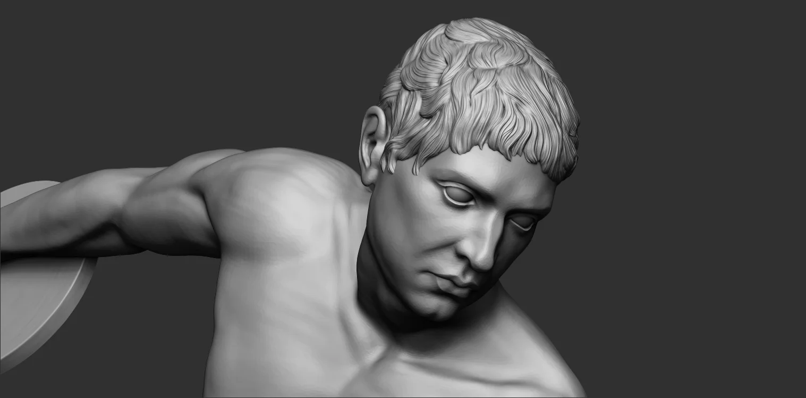
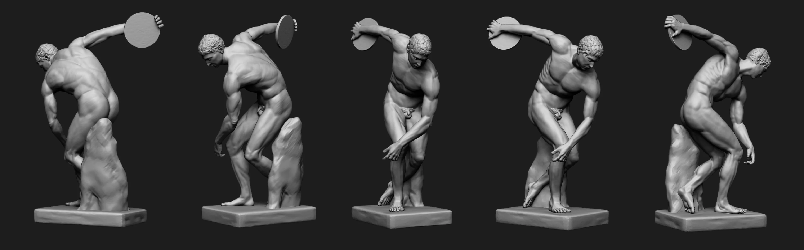
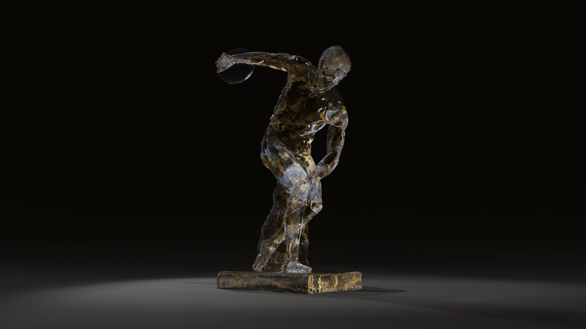
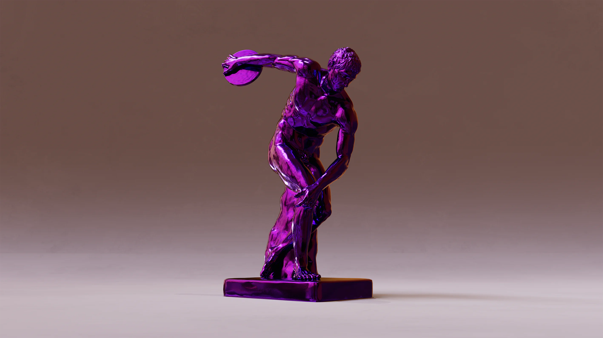
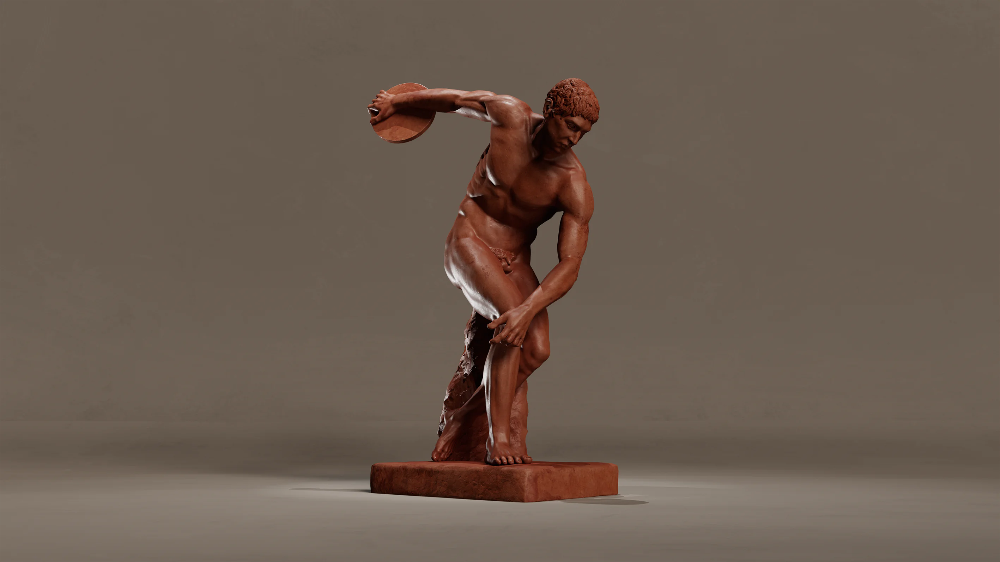
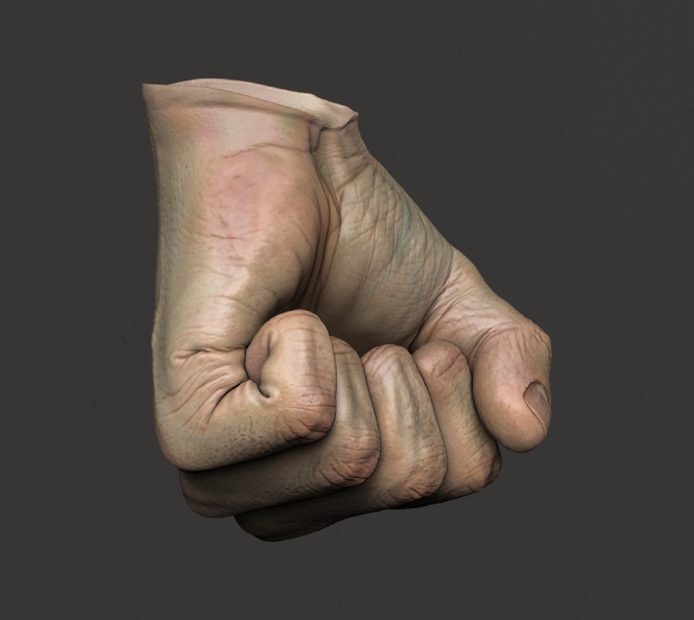
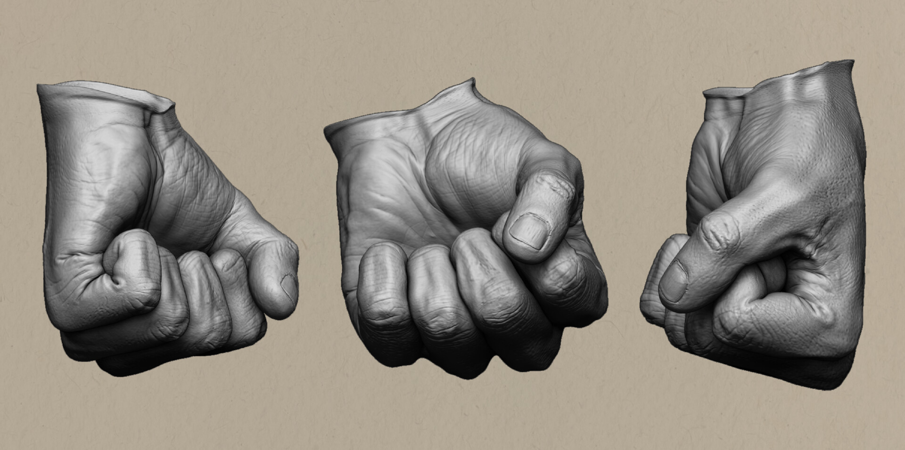
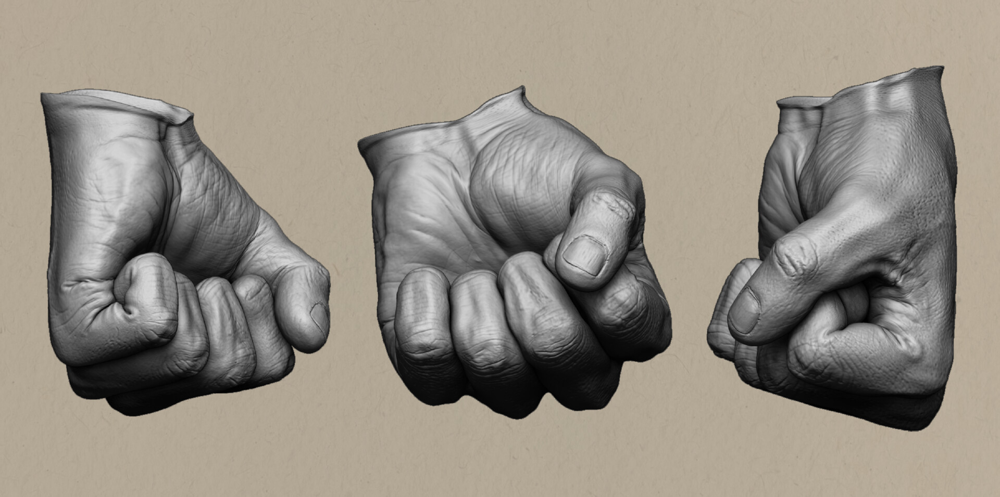
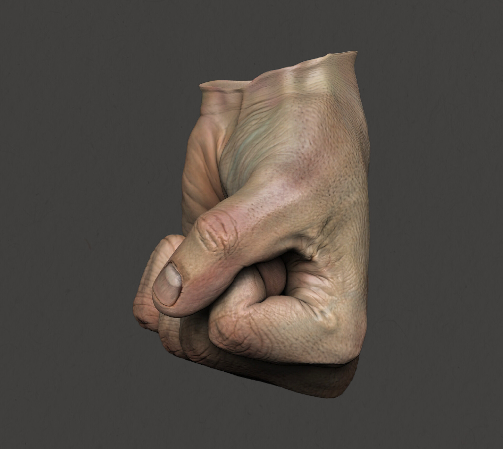
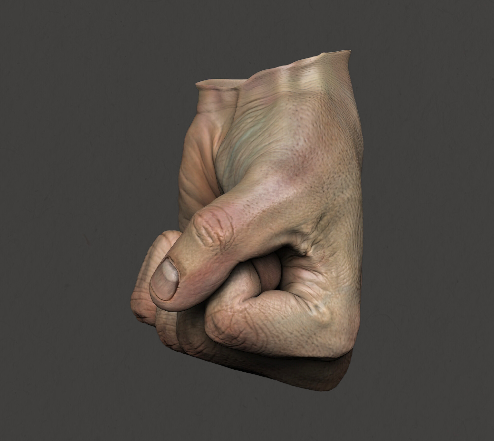

Estudio Anatómico
En esta sección, se presentan estudios anatómicos detallados que exploran la complejidad y precisión del cuerpo humano en 3D. Cada modelo es una representación minuciosa de la estructura ósea, muscular y las proporciones del cuerpo, creada con el objetivo de comprender y captar su funcionalidad y belleza. Estos estudios no solo demuestran el dominio técnico de la artista, sino también su profundo interés por los fundamentos del arte y la anatomía, sirviendo tanto como herramienta de aprendizaje como base para futuras creaciones.
Comencé investigando la historia del Discóbolo y recopilando múltiples imágenes e información. Hice varios bocetos para tener una referencia de mi objetivo y asegurarme de que las proporciones anatómicas fueran correctas.





Estudio de manos modelado y renderizado en ZBrush, texturizado en Substance Painter.

 

 
